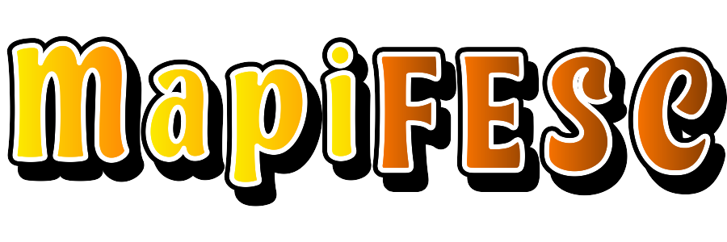
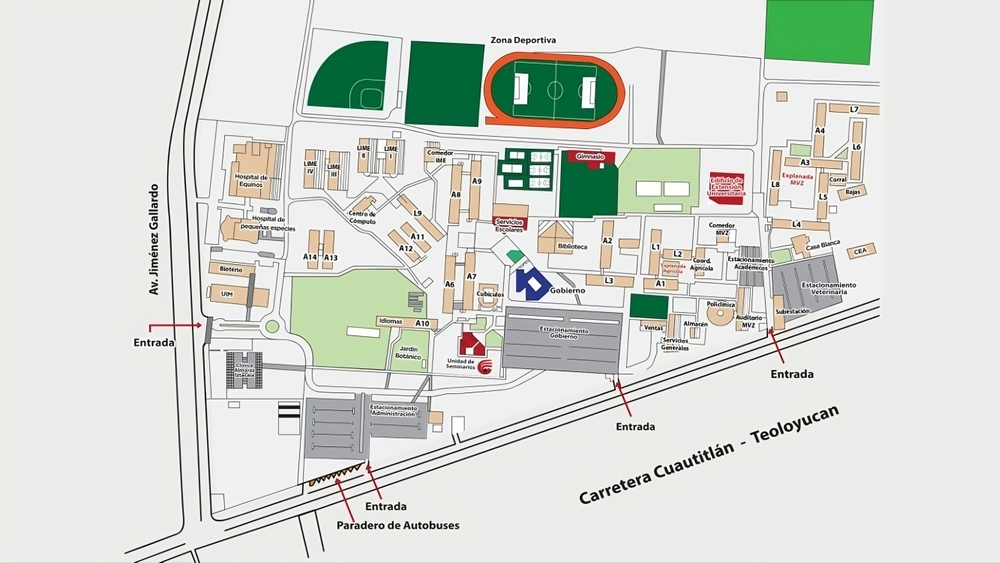

Para poder visualizar el mapa, mantenga su dispositivo en horizontal

Torniquetes
Letras
Entrada CIFESC
Jardin Botanico
CIFESC
Cafeteria
CoordinacionAdm
Pasillos
Explanada
A8 y A9
Servicios Medicos
CoordinacionING
Comedor IME
Canchas
LIME 1 y 2
Entradas LIME
LIME 3 y 4
Entradas LIME
Fronton
Gimnasio
Campo
A2 abajo
A2 arriba
A1 y L1
Explanada Agri
Modulo Ventas
Estacionamiento
EXUBE y Comedor
Escudo MVZ
A3 y A4
Corrales
A4 y L7
L6
Casa Blanca
CADI
Taller Cultural
Escultura de Metal
Ajedrez
Estacionamiento
Entrada MVZ
Entrada Corral
Entrada Hospitales
Hospital Equinos
Pequeñas Especies
Sala de Computo
Entrada Keller
Monumento
Gobierno
UIM
Bioterio
Centro de Computo
Biblioteca
Servicios Escolares
Orientacion
Gallineros
Entrada A14
A11 y L9
Cubiculos
Intersección
Explanada
Coordinacion Info
Auditorio Keller
Zona Seleccionada
Tu navegador no soporta videos HTML5.